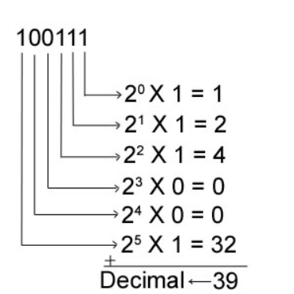

CONTENU :
Par la suite en octobre 1938 un mathématicien polonais a mis en place un décryptage grâce à une machine qui prenait 2 heures pour décrypter un message provenant d'Enigma. Cette machine grâce à sa capacité à décrypter Enigma plus ou moins rapidement a permis d'obtenir diverses informations donnant l'avantage au camps des alliés.


En 1938, Konrad Zuse met au point un ordinateur appelé le Z3 qui sera la premier ordinateur à utiliser le binaire ( langage qui va permettre à un ordinateur de traiter des informations par une série de 0 et de 1 ) au lieu du décimal. Ce calculateur était la première machine programmable pleinement automatique ce qui en faisait le premier ordinateur à proprement parler du monde.

| Décimal | Binaire | |
|---|---|---|
| Valeurs | 0 | 0 |
| 1 | 1 | |
| 2 | 10 | |
| 3 | 11 | |
| 4 | 100 | |
| 5 | 101 | |
| 6 | 110 | |
| 7 | 111 | |
| 8 | 1000 | |
| 9 | 1001 |
En 1937, Howard Aiken met au point un ordinateur programmable appelé Mark I de 17 mètres de long et 2.5 mètres de hauteur permettant de calculer 5 fois plus vite que l’Homme. Il sera en 1947 remplacé par le Mark II qui voit ses engrenages remplacés par des composants électroniques. En 1943, le premier ordinateur ne comportant plus de pièces mécaniques voit le jour grâce à J.Mauchly et J.Presper Eckert au nom de l’ENIAC. Il est composé de 1800 lampes à vide et occupe une place de 1500 m² . Cependant cet ordinateur présentait plusieurs inconvénients dont la qualité des tubes qui était de mauvaise qualité pour conduire au mieux l’électricité ce qui demande donc pour son utilisation une grande quantité d’énergie électrique qui sera en partie dissipée en chaleur. C’est d’ailleurs à cause de ça qu’a eu lieu la première erreur informatique car un insecte est venu se loger dans les lampes ce qui engendra un court-circuit. De là est venu le nom de « Bug » qui veut dire insecte en anglais.
{kind=link}